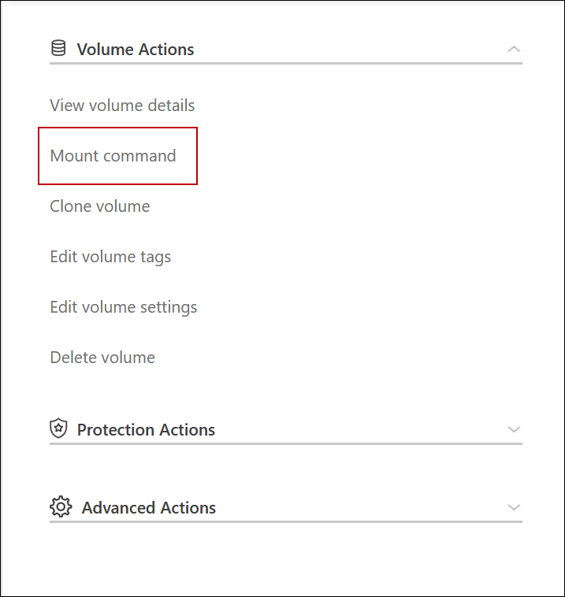

릴리스 정보
릴리스 정보
Google Cloud의 고가용성 쌍
 변경 제안
변경 제안
Cloud Volumes ONTAP HA(고가용성) 구성은 무중단 운영 및 내결함성을 제공합니다. Google Cloud에서는 두 노드 간에 데이터를 동기식으로 미러링합니다.
HA 구성 요소
Google Cloud의 Cloud Volumes ONTAP HA 구성에는 다음과 같은 구성요소가 포함됩니다.
-
데이터가 서로 동기식으로 미러링되는 2개의 Cloud Volumes ONTAP 노드
-
스토리지 테이크오버 및 반환 프로세스를 지원하는 노드 간 통신 채널을 제공하는 중재자 인스턴스
-
구역 1개 또는 구역 3개(권장)
세 개의 영역을 선택하면 두 개의 노드와 중재자가 별도의 Google Cloud 영역에 있습니다.
-
4개의 가상 프라이빗 클라우드(VPC).
GCP는 각 네트워크 인터페이스가 별도의 VPC 네트워크에 상주하도록 요구하기 때문에 이 구성에서는 4개의 VPC를 사용합니다.
-
Cloud Volumes ONTAP HA 쌍으로 들어오는 트래픽을 관리하는 Google 클라우드 내부 로드 밸런서(TCP/UDP) 4개
"네트워킹 요구 사항에 대해 알아보십시오"부하 분산 장치, VPC, 내부 IP 주소, 서브넷 등에 대한 자세한 정보를 제공합니다.
다음 개념적 이미지에는 Cloud Volumes ONTAP HA 쌍 및 구성 요소가 나와 있습니다.

중재자
다음은 Google Cloud의 중재자 인스턴스에 대한 몇 가지 주요 세부 사항입니다.
- 인스턴스 유형
-
E2-마이크로(이전에 F1-마이크로 인스턴스가 사용됨)
- 디스크
-
각각 10GiB인 2개의 표준 영구 디스크
- 운영 체제
-
데비안 11

Cloud Volumes ONTAP 9.10.0 이전 버전에서는 데비안 10이 중재자위에 설치되었습니다. - 업그레이드
-
Cloud Volumes ONTAP를 업그레이드할 때 BlueXP는 필요에 따라 중재자 인스턴스도 업데이트합니다.
- 인스턴스에 대한 액세스
-
Debian의 경우 기본 클라우드 사용자는 "admin"입니다. Google Cloud 콘솔 또는 gcloud 명령줄을 통해 SSH 액세스가 요청될 때 "admin" 사용자의 인증서를 생성하고 추가합니다. 루트 권한을 얻기 위해 'SUDO'를 지정할 수 있습니다.
- 제3자 에이전트
-
타사 에이전트 또는 VM 확장은 중재자 인스턴스에서 지원되지 않습니다.
스토리지 테이크오버 및 반환
노드가 중단되면 다른 노드가 파트너에게 데이터를 제공하여 지속적인 데이터 서비스를 제공할 수 있습니다. 데이터는 파트너에게 동기식으로 미러링되므로 클라이언트가 파트너 노드에서 동일한 데이터에 액세스할 수 있습니다.
노드가 재부팅된 후 파트너가 스토리지를 반환하기 전에 데이터를 다시 동기화해야 합니다. 데이터를 재동기화하는 데 걸리는 시간은 노드가 다운된 동안 변경된 데이터의 양에 따라 달라집니다.
스토리지 테이크오버, 재동기화 및 반환은 기본적으로 모두 자동으로 수행됩니다. 사용자 작업이 필요하지 않습니다.
RPO 및 RTO
HA 구성을 사용하면 다음과 같이 데이터의 고가용성을 유지할 수 있습니다.
-
복구 지점 목표(RPO)는 0초입니다.
데이터는 데이터 손실 없이 트랜잭션 측면에서 일관적입니다.
-
복구 시간 목표(RTO)는 120초입니다.
정전이 발생할 경우 120초 이내에 데이터를 사용할 수 있어야 합니다.
HA 구축 모델
여러 존 또는 단일 존에 HA 구성을 구축하여 데이터의 고가용성을 보장할 수 있습니다.
- 다중 영역(권장)
-
3개 존에 HA 구성을 구축하면 존 내에서 장애가 발생하더라도 지속적인 데이터 가용성을 보장할 수 있습니다. 쓰기 성능은 단일 존을 사용할 때보다 약간 낮지만, 이는 최소화됩니다.
- 단일 영역
-
단일 영역에 배포되면 Cloud Volumes ONTAP HA 구성에서 분산 배치 정책을 사용합니다. 이 정책은 별도의 존을 사용하여 장애를 격리하지 않고도 존 내의 단일 장애 지점으로부터 HA 구성을 보호합니다.
이 구축 모델은 구역 간 데이터 유출 비용이 없으므로 비용이 절감됩니다.
HA Pair의 스토리지 작동 방식
ONTAP 클러스터와 달리 GCP의 Cloud Volumes ONTAP HA 쌍에 있는 스토리지는 노드 간에 공유되지 않습니다. 대신 데이터가 노드 간에 동기식으로 미러링되므로 장애 발생 시 데이터를 사용할 수 있습니다.
스토리지 할당
새 볼륨을 생성하고 추가 디스크가 필요한 경우 BlueXP는 두 노드에 동일한 수의 디스크를 할당하고 미러링된 애그리게이트를 생성한 다음 새 볼륨을 생성합니다. 예를 들어, 볼륨에 두 개의 디스크가 필요한 경우 BlueXP는 노드당 두 개의 디스크를 총 4개의 디스크에 할당합니다.
구성의 스토리지
HA 쌍을 액티브-액티브 구성으로 사용할 수 있으며, 두 노드에서 클라이언트에 데이터를 제공하거나 액티브-패시브 구성으로 사용할 수 있습니다. 이 구성에서는 패시브 노드가 액티브 노드의 스토리지를 인계받은 경우에만 데이터 요청에 응답합니다.
HA 구성에 대한 성능 기대치
Cloud Volumes ONTAP HA 구성은 노드 간에 데이터를 동기식으로 복제하여 네트워크 대역폭을 사용합니다. 따라서 단일 노드 Cloud Volumes ONTAP 구성과 비교하여 다음과 같은 성능을 기대할 수 있습니다.
-
한 노드의 데이터만 제공하는 HA 구성의 경우 읽기 성능은 단일 노드 구성의 읽기 성능과 비슷하며 쓰기 성능은 낮습니다.
-
두 노드의 데이터를 제공하는 HA 구성의 경우 읽기 성능은 단일 노드 구성의 읽기 성능보다 높고 쓰기 성능은 동일하거나 더 높습니다.
Cloud Volumes ONTAP 성능에 대한 자세한 내용은 를 참조하십시오 "성능".
스토리지에 대한 클라이언트 액세스
클라이언트는 볼륨이 상주하는 노드의 데이터 IP 주소를 사용하여 NFS 및 CIFS 볼륨을 액세스해야 합니다. NAS 클라이언트가 파트너 노드의 IP 주소를 사용하여 볼륨에 액세스하는 경우 트래픽이 두 노드 간에 이동하므로 성능이 저하됩니다.

|
HA 쌍에서 노드 간에 볼륨을 이동하는 경우 다른 노드의 IP 주소를 사용하여 볼륨을 다시 마운트해야 합니다. 그렇지 않으면 성능이 저하될 수 있습니다. 클라이언트가 CIFS에 대한 NFSv4 참조 또는 폴더 리디렉션을 지원하는 경우 Cloud Volumes ONTAP 시스템에서 이러한 기능을 설정하여 볼륨을 다시 마운트하지 않도록 할 수 있습니다. 자세한 내용은 ONTAP 설명서를 참조하십시오. |
BlueXP의 볼륨 관리 패널에서 Mount Command 옵션을 통해 올바른 IP 주소를 쉽게 식별할 수 있습니다.
